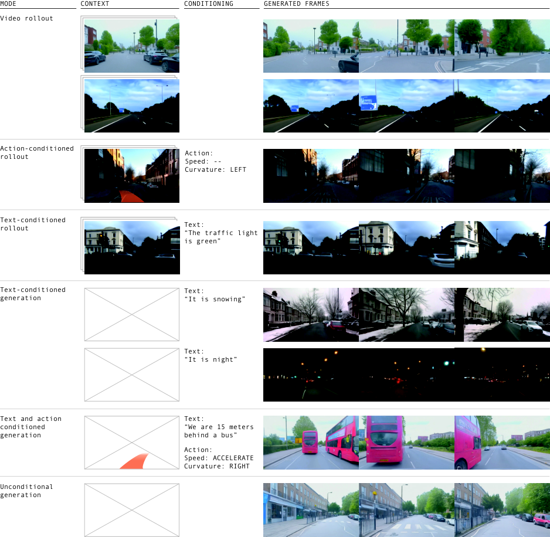
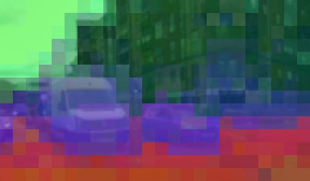
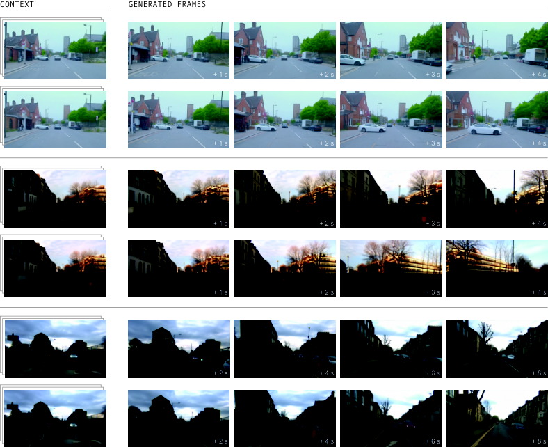
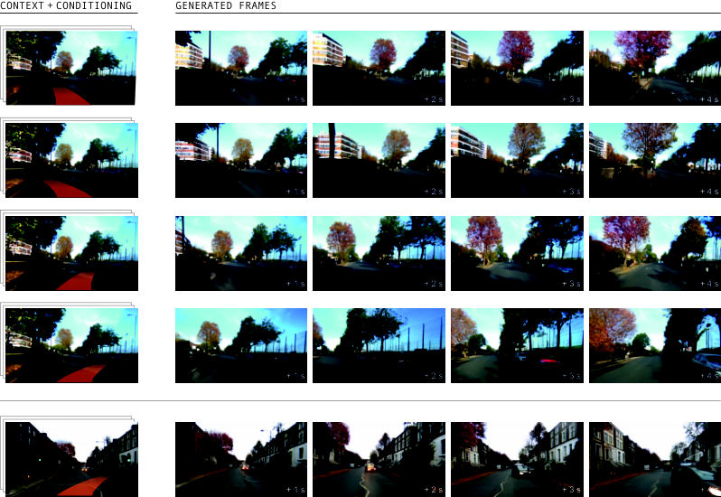

GAIA-1: A Generative World Model for Autonomous Driving
原论文摘要 · English Abstract
Autonomous driving promises transformative improvements to transportation, but building systems capable of safely navigating the unstructured complexity of real-world scenarios remains challenging. A critical problem lies in effectively predicting the various potential outcomes that may emerge in response to the vehicle's actions as the world evolves. To address this challenge, we introduce GAIA-1 ('Generative AI for Autonomy'), a generative world model that leverages video, text, and action inputs to generate realistic driving scenarios while offering fine-grained control over ego-vehicle behavior and scene features. Our approach casts world modeling as an unsupervised sequence modeling problem by mapping the inputs to discrete tokens, and predicting the next token in the sequence. Emerging properties from our model include learning high-level structures and scene dynamics, contextual awareness, generalization, and understanding of geometry. The power of GAIA-1's learned representation that captures expectations of future events, combined with its ability to generate realistic samples, provides new possibilities for innovation in the field of autonomy, enabling enhanced and accelerated training of autonomous driving technology.
分词器把视频压成离散 token
每帧图像经 DINO 蒸馏的分词器压成 $n=576$ 个 token，词表 $K=8192$，压缩约 $470$ 倍
世界模型预测下一个 token
6.5B 参数自回归 transformer 按文本—图像—动作顺序预测下一个图像 token
扩散解码器把 token 还原为视频
3D U-Net 扩散模型把 token 翻译回高分辨率、时间一致的像素视频
采样与引导控制生成
top-$k=50$ 采样平衡多样性与真实性，无分类器引导放大文本提示的影响
同一开头分叉出多个可控未来
换动作或文本，同一段视频开头就能推演出让行、变道甚至开出车道的不同未来

问题与动机
自动驾驶的核心难题不是感知单帧画面，而是预测“我的动作会让世界如何演变”。同一场景下，自车加速、让行、变道会引出多个合理未来，而传统预测方法只给单一轨迹或低维状态，无法覆盖这种多模态不确定性；一旦预测错了最关键的那条未来，规划与控制就无从谈安全。
已有两条路线各有短板。Dreamer、TD-MPC2 一系的世界模型以低维隐状态做规划控制，学得快、样本效率高，但生成能力弱，看不到逼真的未来；视频生成模型（如 Imagen Video）能产出逼真视频，却不建模“动作导致未来”的因果，只会无条件地“画”视频，学不到可用于决策的未来表征。前者看不见世界，后者理解不了世界。
GAIA-1 的问题意识正在于此：能否同时要两边的优点——像大语言模型那样可扩展的无监督序列建模，又能输出可供决策与仿真使用的逼真驾驶视频？以及能否用视频、文本、动作三种提示对生成做细粒度控制，让同一个场景开头分叉出可干预的多个未来？
- 核心矛盾：未来是多模态的，单点预测不够；逼真生成与可控决策难以兼得。
- 评价标准从“预测准不准”扩展到“能不能生成多个合理未来并受动作控制”。
- 数据设定：真实世界驾驶视频是无标签的，方法必须走无监督、自监督路线。
核心思想
把世界建模重铸为无监督序列建模：视频、文本、动作全部离散化为 token，排成一条长序列，世界模型只做一件事——预测下一个图像 token。这是把大语言模型的成功范式（下一个 token 预测加规模缩放）直接搬到驾驶世界模型上，赌的是同一套缩放律在视频世界里同样成立。
两阶段分工是第二个关键抉择。世界模型在离散 token 空间里推理高层结构与动力学（路网、交通规则、他车意图），视频扩散解码器只负责把 token 翻译回高分辨率、时间一致的像素视频。前者管“想什么”，后者管“画出来”，动力学学习不再被像素级高频细节拖累。
多模态提示即控制：动作（速度、曲率）控制自车行为，文本控制天气、光照、场景元素，视频提示给定初始条件；三者可组合，支持反事实推演——同一段视频开头，换一组动作就能看到另一条未来。这是它与纯视频生成模型最本质的区别。
规模化假设是贯穿全文的赌注：像大语言模型的缩放律一样，世界模型的交叉熵随算力呈幂律下降（第 6 节验证），因此“更大模型加更多真实驾驶数据”本身就是一条可预期的改进路线，不需要为每个新场景手工设计结构。
- 统一接口：三种模态变成同一种 token 序列，transformer 一视同仁。
- 解耦表征与渲染：动力学在 token 空间学，像素细节交给扩散模型。
- 控制即条件：动作与文本不是后处理，而是训练时就存在的条件输入。
模型结构与关键机制
输入编码上，每帧图像经预训练图像分词器离散化为 $n=576$ 个 token；文本用预训练 T5-large 编码，每步 $m=32$ 个 token；动作用速度与曲率 $l=2$ 个标量，各经线性层映射。全部映射到 $d=4096$ 维共享空间，每步按“文本—图像—动作”顺序交错排列，全序列为 $(\mathbf{c}_1,\mathbf{z}_1,\mathbf{a}_1,\ldots,\mathbf{c}_T,\mathbf{z}_T,\mathbf{a}_T)$，位置编码用可学习的时空分解嵌入（$T$ 个时间嵌入加 $m+n+l=610$ 个空间嵌入）。
图像分词器是全卷积 2D U-Net 编码器 $E_\theta$，下采样因子 $D=16$，$288\times512$ 的图像压成 $18\times32=576$ 个 token，词表 $K=8192$，比特压缩比约 $470$ 倍。关键设计是 DINO 蒸馏：用量化特征与预训练 DINO 特征的余弦相似度损失，把压缩偏向语义而非高频细节；图 3 显示，蒸馏后的 token 嵌入按语义类别（车辆、路面、天空）聚类，而基础 VQ-GAN 的 token 则杂乱得多。
世界模型是自回归 transformer，训练目标是给定全部历史 token 预测下一个图像 token：
$$L_{\text{world model}}=-\sum_{t=1}^{T}\sum_{i=1}^{n}\log p(z_{t,i}\mid\mathbf{z}_{ 其中 $z_{t,i}$ 是第 $t$ 帧第 $i$ 个图像 token，$\mathbf{z}_{ 视频解码器是 3D U-Net 扩散模型，带分解的空间与时间注意力；用 $\mathbf{v}$-参数化与 $L_1$/$L_2$ 加权损失： $$L_{\text{video}}=\mathbb{E}_{\mathbf{\epsilon},t'}\left[\lVert\mathbf{\epsilon}_{\theta}(\mathbf{x}^{t'},t',\mathbf{z},\mathbf{m})-\mathbf{\epsilon}\rVert^{2}_{2}\right]$$ 其中 $\mathbf{\epsilon}_\theta$ 是去噪视频模型，$\mathbf{\epsilon}$ 是去噪目标（$\mathbf{v}$-参数化），$t'\sim U(0,1)$ 是采样的扩散时间，$\mathbf{x}^{t'}=\alpha_{t'}\mathbf{x}+\sigma_{t'}\mathbf{\epsilon}$ 是加噪视频，$\alpha_{t'}$ 与 $\sigma_{t'}$ 是由噪声表定义的系数，$\mathbf{z}$ 是条件图像 token 序列，$\mathbf{m}$ 是按训练任务给出的图像掩码序列。单模型多任务联合训练（图像生成、视频生成、自回归解码、视频插值），每步以 $p=0.15$ 的概率随机掩盖条件 token，以提升泛化与时间一致性。  数据是 2019–2023 年在伦敦采集的 4700 小时、25Hz 专有驾驶数据，约 4.2 亿张去重图像；验证集 400 小时，含严格地理围栏（训练从未见过的道路）与主采集路线围栏两部分，用于监测过拟合与泛化。采样时对经纬度、天气、转向与速度行为等特征做加权平衡（指数 0.5），防止模型只学会最常见的晴天直行。 三组件分开训练：分词器 0.3B，200k 步、4 天、32 张 A100；世界模型 6.5B，100k 步、15 天、64 张 A100，batch 为 128，条件模式按无条件、动作、文本等于 20%/40%/40% 混合；解码器 2.6B，300k 步、15 天、32 张 A100，batch 为 64，参数 EMA 衰减 0.999。视频先从 25Hz 降采样到 6.25Hz 再进世界模型（把 4 秒视频压进 26 帧），全帧率靠解码器的时间超分恢复。 推理采样上，世界模型逐 token 自回归生成，每帧要做 $n=576$ 次前向。argmax 会陷入重复循环（困惑度只取极低值），全分布采样会采到不可靠的尾部（困惑度飙高），折中是 top-$k=50$ 采样，其生成 token 的困惑度分布最接近真实图像（图 6）。长视频用滑窗续写。 文本引导用无分类器引导（CFG），最终 logits 为： $$l_{\text{final}}=(1+t)l_{\text{conditioned}}-tl_{\text{unconditioned}}$$ 其中 $l_{\text{conditioned}}$ 是文本条件下的 logits，$l_{\text{unconditioned}}$ 是无条件 logits，$t$ 是引导强度；把无条件 logits 换成另一段文本的 logits 还能做“负向提示”。引导强度要在 token 维线性递减、在帧维按余弦衰减，否则多帧累积会失控。解码时先解前 $T'=7$ 帧，再以 2 帧重叠自回归续解，并做两级时间上采样（6.25Hz 到 12.5Hz 再到 25Hz），DDIM 采样 50 步；图像任务与视频任务的去噪输出按权重 $w=0.5$、概率 $p=0.25$ 随机混合： $$\tilde{\mathbf{\epsilon}}_{\theta}(\mathbf{x}^{t'},t',\mathbf{z},\mathbf{m})=w\cdot\mathbf{\epsilon}_{\theta}^{\pi}(\mathbf{x}^{t'},t',\mathbf{z},\mathbf{m})+(1-w)\cdot\mathbf{\epsilon}_{\theta}(\mathbf{x}^{t'},t',\mathbf{z},\mathbf{m})$$ 其中 $\mathbf{\epsilon}_{\theta}^{\pi}$ 是逐帧独立去噪（关时间层），$\mathbf{\epsilon}_{\theta}$ 是联合去噪整个视频。有趣的是，从序列末尾往前倒着解码，物体更稳定、地平线闪烁更少。 论文没有传统意义上的基准分数表——没有 FVD、没有与基线方法的定量对比，评价几乎全是定性演示加一条缩放律曲线。这是技术报告式写作，读者要清醒：数字部分只有规模与训练配置是硬的，能力宣称基本靠看视频。 缩放律是唯一的定量主线：用 0.65M 到 650M 参数（比最终模型小 10000 倍到 10 倍）的一系列小模型拟合幂律 $f(x)=c+(x/a)^{b}$，其中 $x$ 是算力、$f(x)$ 是验证集交叉熵，算力按 $C=6N$（$N$ 为除嵌入层外的参数量）乘以训练 token 数估算；结果是最终 6.5B 模型的交叉熵能被不到 $20$ 倍算力的小模型准确预测，说明“规模越大、交叉熵越低”的趋势在世界模型上同样成立，外推仍有大幅改进空间。 能力演示分四组：长视频想象（从零生成数分钟连贯驾驶场景）、多合理未来（同一视频开头采样出让行与不让行、直行与环岛右转、不同交通密度）、细粒度控制（文本改天气与光照；动作让自车左转、右转甚至偏离车道，并引发对向车辆避让反应）、文本加动作联合想象（先用文本在前方“变”出一辆公交，再强制超车）。其中偏离车道与超车是训练数据中不存在的专家行为外推。 几何与因果的证据是间接的：模型能复现减速带引起的车身俯仰与侧倾、红绿灯与让行规则、对向车的避让反应——这些都不是逐像素模仿能轻易解释的，说明 token 表征确实编码了三维结构与他车意图；但论文没有做任何受控的因果干预实验来量化这一点。 数字层面：三组件参数量 0.3B、6.5B、2.6B，世界模型占总参数约 69%，说明算力与容量集中在“想未来”而非“画视频”；训练耗时 4 天、15 天、15 天（各用 32–64 张 A100 80GB），世界模型与解码器耗时相同但步数差三倍（100k 对 300k），反映两者单步成本差异巨大。 论文没有可图表化的基准分数：没有 FVD、PSNR、人类评分，也没有与任何基线的横向对比；唯一的定量曲线是缩放律拟合（用 0.65M–650M 的小模型预测 6.5B 模型的交叉熵，所需算力不到最终模型的 $20$ 倍），但拟合优度没有报告数值，交叉熵本身也不是驾驶任务指标。 水分与局限：参数与耗时数字是硬的、可信的；但“涌现能力”的宣称全靠挑出来的视频片段，没有失败率统计，也没有严格地理围栏验证集上的量化泛化分数——读者应把这篇的实验部分读作“能力演示加规模论证”，而非“基准胜利”。   速度是第一短板：自回归逐 token 生成远未达到实时，只能离线做数据生成与仿真；论文自己承认这一点，只说“可并行采样多个未来”作为缓解，而这并没有解决单条未来生成太慢的问题。 评价薄弱是第二短板：没有定量视频质量指标，没有闭环驾驶评测，没有把学到的表征用于下游规划或控制任务来证明“世界模型”的价值——它更像一个可控视频生成器，而非已被验证的决策模型。读者应把它读作“能力演示加规模论证”，而非“基准胜利”。 数据与可复现性是第三短板：4700 小时伦敦驾驶数据是 Wayve 专有的，不公开；模型不开源；他人无法复现缩放律曲线，也无法验证“涌现”宣称。伦敦单城数据还带来地域偏差，靠严格地理围栏验证集只能部分回答泛化问题。 更深的争议在于：把“生成逼真视频”等同于“理解世界”是否成立？后续工作（DriveDreamer、GenAD、Vista）沿着同一路线走了下去，但也有批评认为纯生成式路线缺乏显式的三维与物理约束，长期会出现物理不一致（物体凭空出现或消失、违反交通规则），需要结构先验或与 TD-MPC2 式“为控制而建模”的路线结合。 范式意义：GAIA-1 是第一个把“大语言模型式下一个 token 预测加扩散解码”完整跑通到真实自动驾驶视频上的工作，证明了世界建模可以像语言建模一样吃规模红利；此后 DriveDreamer、GenAD、Vista、Wayve 自己的 GAIA-2（2025）都沿着这条线走。 应用意义：它把世界模型从“控制器的内部模型” reposition 成“神经仿真器”——可以无限生成长尾与对抗场景（雨夜、闯红灯行人、偏离车道），用来训练与验证自动驾驶系统，绕开真实路采的成本与安全风险。这是它对自动驾驶工业界最直接的遗产。 对比 TD-MPC2 的启示：上一篇把世界模型做“小而准”（低维隐状态加 MPC 规划加奖励驱动），这篇把世界模型做“大而真”（高维视频生成加规模缩放）；两条路线后来汇合——今天的端到端驾驶世界模型既要 GAIA-1 的生成与规模，也要 TD-MPC2 的规划与闭环。理解这场分工与汇合，就是理解 2023 年后世界模型分野的关键。 对读者的 takeaway：读 GAIA-1 不要只看炫酷视频，要看三处设计抉择——DINO 蒸馏的分词器（语义优先于像素）、top-$k=50$ 采样与 CFG 双重调度（多样性与可控性的平衡）、以及用交叉熵缩放律代替任务指标的评价选择；这三处决定了它能走多远，也决定了它的天花板。 思考题 1：GAIA-1 与 TD-MPC2 的世界模型在“状态是什么、为谁服务、怎么评价”三件事上有何根本不同？这种分歧对后来世界模型的发展意味着什么？ 根本分歧有三层：状态上，TD-MPC2 是为奖励与规划压缩的低维连续隐变量，GAIA-1 是保留视觉细节的离散视频 token（每帧 576 个）；服务对象上，前者是控制器内部的规划模型，后者是产出训练数据的神经仿真器；评价上，前者看任务回报，后者看交叉熵缩放律与生成质量。理由链是目标决定形态：TD-MPC2 用 MPC 在线规划需要每步快速 rollout，所以状态必须小；GAIA-1 要生成可观看、可干预的视频，所以必须真。后续发展证明这是互补而非对立：GAIA-2 与 Vista 开始补闭环评测，DriveDreamer 等把扩散世界模型接回规划，两条路线正在汇合。 思考题 2：为什么 GAIA-1 不直接对像素做自回归预测，而要先经 DINO 蒸馏的分词器离散化、再用扩散解码器还原？top-$k=50$ 采样在这个设计里解决了什么问题？ 直接预测像素在序列长度与语义密度上都不可行：$288\times512$ 的视频逐像素自回归会让序列长到无法训练，而分词器以约 470 倍压缩把 4 秒视频压进 15860 个 token；DINO 蒸馏防止 token 被高频纹理淹没，否则世界模型要花容量学像素噪声而非动力学；扩散解码器再把时间一致性与高频细节补回来。top-$k=50$ 解决的是自回归采样的两难：argmax 的困惑度坍缩导致重复帧，全分布采样会采到不可靠的尾部导致失真，图 6 显示 top-$k=50$ 的困惑度分布最接近真实 token，是多样性与真实性的折中点。 思考题 3：论文用“让行、超车、开出车道”等例子宣称模型理解了因果与几何，这些定性演示能否算作理解的证据？如果要严格区分“真理解”与“统计模仿”，应该补做什么实验？ 不能算严格证据，只能算必要不充分的迹象：让行与避让也可能来自训练数据中大量相似片段的插值，而非因果理解；开出车道的外推更有说服力（训练数据里没有这种行为），但仍是定性单例，没有失败率统计。要严格区分，应补四类实验：一是受控干预，固定视频开头、只改动作，量化多组动作下未来分布是否符合物理预期；二是反事实一致性评分；三是几何探针，从隐表征解码深度或速度并与真值比较；四是把表征迁移到下游预测或规划任务，看是否优于基线——而第四点正是 TD-MPC2 式评价，GAIA-1 恰恰缺了这一环。 上一篇 TD-MPC2（Hansen et al., 2023）把世界模型做成“为控制服务的紧凑动力学模型”：在低维连续隐状态上学习转移与奖励，用模型预测控制（MPC）在线规划，在仿真与真实机器人上以极高样本效率完成控制任务，评价标准是任务回报。GAIA-1 与它同属“把世界建模写成序列建模”的大转向，都受益于 transformer 与大规模无监督训练，但在三个根本点上分道扬镳：第一，目标从“控制”转向“生成”——GAIA-1 不建模奖励、不做规划，输出的是可观看、可干预的高清驾驶视频，世界模型首先是一台神经仿真器；第二，状态从“低维隐向量”转向“离散视频 token”——TD-MPC2 刻意压缩掉像素细节以换取规划效率，GAIA-1 反而保留每帧 576 个 token 的视觉细节以换取真实感与可解释性；第三，评价从“任务回报”转向“缩放律加定性涌现”——用交叉熵随算力的幂律下降代替基准分数。承继在于方法论：两者都证明世界模型不必是手工设计的物理仿真器，而可以从数据里学出来；分歧在于“学来干什么”。理解这篇，最好的坐标就是把它放在 TD-MPC2 的对面：一个要“算得准、跑得快、能控制”，一个要“看得真、想得远、能想象”——而 2023 年之后的世界模型研究，正是在把这两端重新接起来。训练与推理流程
实验与结果
实验结果 · 数据
GAIA-1 三个可训练组件的参数量
项目 数值 图像分词器 0.3 十亿参数 世界模型 6.5 十亿参数 视频解码器 2.6 十亿参数 三个组件的训练耗时
项目 数值 图像分词器 4 天 世界模型 15 天 视频解码器 15 天 局限与争议
为什么今天还重要
关键术语
思考题
查看参考答案
查看参考答案
查看参考答案
谱系与位置
我的笔记